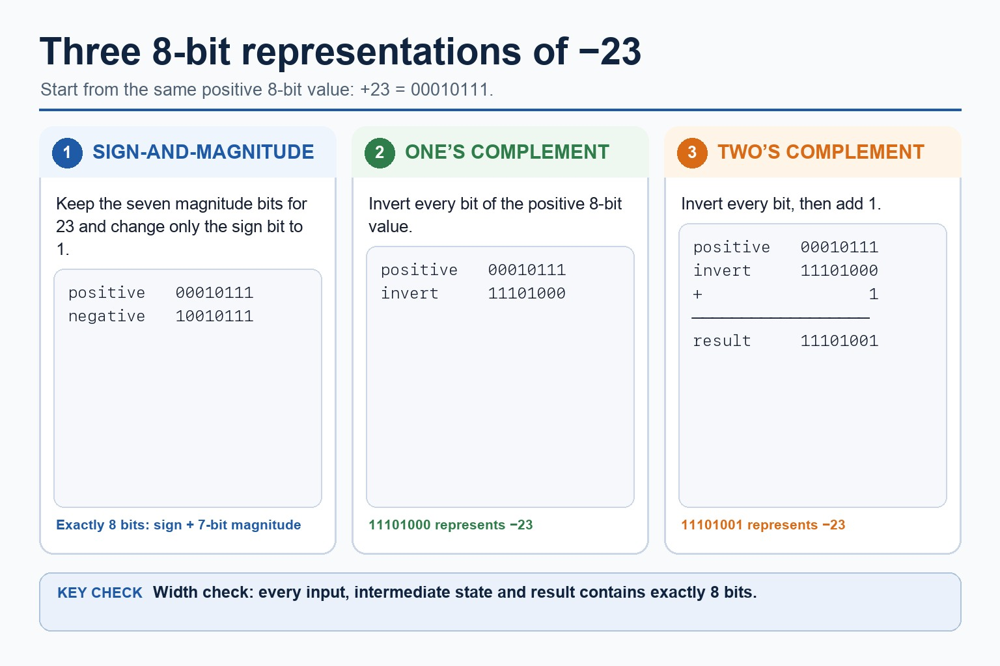

Cambridge AS9618 | Paper 1 | Section 1: Information representation
Binary, denary and hexadecimal number systems
Flexible-depth lesson
Binary, denary and hexadecimal number systems
S1.02, S1.03 | Select what to omit, teach briefly or explore in depth.
Quickdiagnose + essentials
Fullcomplete explanation
Deepprerequisites + extension
Choosepractice by need
Teacher choice
Choose the depth for this group
Quick route
Use the diagnostic, learning objectives, first worked example and foundation question. Stop once the learner can explain the central distinction accurately.
Full route
Teach every core explanation point, the worked example and all lesson questions. Use the visual only when it adds a different representation.
Deep route
Add the prerequisite refresher, ask learners to connect the concept checklist, discuss the labelled extension and complete a transfer question without a model answer.
Part 1 | optional depth
Prerequisite knowledge and quick diagnostic
Recall S1.02 before starting this lesson.
Give one accurate definition or method step before continuing. If it is missing, revisit only that prerequisite.
Open optional prerequisite refresher
The Version 2 row requires binary, denary, hexadecimal, Binary Coded Decimal (BCD), one's complement and two's complement; BCD and complements are representations rather than additional number bases.
Show understanding of binary, denary and hexadecimal number systems, BCD, and one's- and two's-complement representations.
Part 2 | deliberately over-complete
Knowledge explanation
Learning objectives
Show understanding of binary, denary and hexadecimal number systems, BCD, and one's- and two's-complement representations.
Convert an integer value from one required number base or representation to another.
Open the concept checklist and choose what to teach
binary
denary
hexadecimal
BCD
one's-complement / one's complement
two's-complement / two's complement
integer
convert / conversion
Detailed explanation
Teach all points, or select only the ones this group needs. The list is intentionally fuller than a fixed lesson slot.
The Version 2 row requires binary, denary, hexadecimal, Binary Coded Decimal (BCD), one's complement and two's complement; BCD and complements are representations rather than additional number bases.
Conversions apply to integer values and the binary, denary, hexadecimal, BCD, one's-complement and two's-complement representations named in the preceding Version 2 row.
Binary is base 2 and uses place values that are powers of 2. Denary is base 10 and uses place values that are powers of 10. A base label identifies the representation; it does not change the integer value.
To convert a binary integer to denary, add the binary place values whose bits are 1. To convert a denary integer to binary, select powers of 2 that sum to the value and write every required bit position, including zeros.
Representation overview: the required integer representations are binary, denary, hexadecimal, BCD, one's-complement and two's-complement. Conversion means preserving the integer value while changing its base or signed representation.
Hexadecimal is base 16 and uses digits 0 to 9 and A to F. One hexadecimal digit represents one four-bit binary nibble, so grouping from the right gives an exact conversion between binary and hexadecimal integer representations.
To convert hexadecimal to denary, multiply each digit value by its power-of-16 place value. Binary, denary and hexadecimal may encode the same integer value even though their written representations differ.
One's-complement representation forms a negative integer by inverting every bit of its positive fixed-width value. Two's-complement representation inverts every bit and adds 1. These are binary representations of signed integers, not separate number bases.
Unsigned subtraction can be performed column by column using borrowing, or by adding the two's complement of the subtrahend. For signed two's-complement subtraction A - B, form the two's complement of B and add it to A. Retain the fixed width, interpret the sign bit and check the representable range.
Binary subtraction applies to each positive or negative binary integer as well as binary addition; use the stated fixed width and signed representation when interpreting the result.
BCD encodes each denary digit separately in four bits. For example, 59 becomes 0101 1001, not the pure-binary value 00111011.
Only 0000 to 1001 are valid BCD digit groups. BCD is used where decimal digits must be displayed or processed exactly, such as digital clocks, calculators and financial displays, although it usually uses more bits than pure binary.
Worked example
Convert D6 hexadecimal: D6 hexadecimal = 1101 0110 binary. In denary, D6 = 13 x 16 + 6 = 214, so all three representations encode the integer 214.

Three ways to represent negative binary values. One maintained explanation is shown as an image on larger screens and as text on small screens.
Positive 23 in 8 bits is 00010111.
The 8-bit sign-and-magnitude representation of -23 is 10010111.
The 8-bit one's-complement representation of -23 is 11101000.
The 8-bit two's-complement representation of -23 is 11101001.
Every input, intermediate state and result must contain exactly 8 bits.
Part 3 | select by learner need
Practice by question type
convertcalculatefoundation4 marks
Question 1. Convert the integer 159 denary to hexadecimal and then to 8-bit binary.
Show answer and marking guidance
Answer: 159 = 9 x 16 + 15; 9F hexadecimal; maps 9 to 1001 and F to 1111; 10011111 binary
Marking guidance: Do not treat A to F as decimal two-digit values.
Common error: For the command word convert, perform that exact action; do not replace it with an unrelated fact.
explainexplainapplication4 marks
Question 2. Explain one practical application of BCD and one practical application of hexadecimal.
Show answer and marking guidance
Answer: BCD application such as a digital clock, calculator or financial display; links BCD to separate exact denary digits; hexadecimal application such as memory addresses, machine-code/debug output or colour values; links hexadecimal to compact four-bit grouping
Marking guidance: Do not award a named application without explaining why the representation suits it.
Common error: Do not repeat the same point in different words; each mark needs a separate idea or method step.
explainexplaintransfer2 marks
Question 3. Why is hexadecimal suitable for a memory address?
Show answer and marking guidance
Answer: It is a compact form of binary with one digit per four-bit nibble.
Marking guidance: Award one mark for each distinct, technically accurate point or method step.
Common error: Do not copy the worked example unchanged; transfer the method and check it against the new context.
Related past-paper indexes
Reference
Marks
Command word
Question type
9618/13/W/25 Q2(a)
3
identify
recall
9618/11/W/25 Q1(ii)
2
complete
calculate
9618/11/W/25 Q1(iii)
2
convert
calculate
9618/12/S/25 Q2(a)
2
convert
calculate
Index only: Cambridge question and mark-scheme wording is not reproduced on this public course page.
Part 4 | close when ready
Summary and exam reminders
Summary
Define binary, denary and hexadecimal number systems with the exact technical vocabulary expected by the syllabus.
Use the lesson method on a fresh context and show the intermediate decision, representation or calculation.
Match the shape of the answer to the command word and the available marks.
Check the final answer against the scenario instead of repeating a memorised sentence.
Common error to correct
Students often treat binary digits as decoration. Correction: every bit position has a value; if the position changes, the value changes.
Exam technique
Follow the command word: state gives a fact; explain links a cause to a consequence; compare covers both sides.
Match the number of independent points or method steps to the available marks.
For binary, denary and hexadecimal number systems, use the exact technical term before applying it to the scenario.